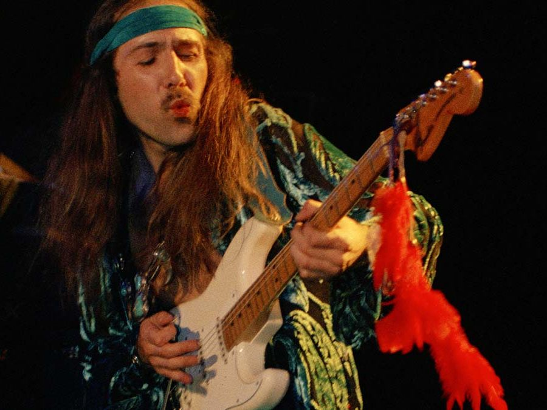

Scorpions es una banda alemana de hard rock y heavy metal fundada en Hannover en 1965.A lo largo de sus más de cincuenta años de carrera, han publicado decenas de álbumes de estudio, sencillos, álbumes en directo, recopilaciones y DVD en vivo. Además, han recibido varios premios y condecoraciones, que los convierte en la banda de rock más exitosa de Alemania.
En sus inicios se denominaban The Nameless —los sin nombre, en español— luego cambiaron a The Scorpions, y posteriormente a finales de 1969 decidieron denominarse simplemente Scorpions. Su primera producción discográfica fue Lonesome Crow (1972), con Klaus Meine en la voz, Rudolf Schenker y Michael Schenker en las guitarras, Lothar Heimberg en el bajo y Wolfgang Dziony en la batería. Sin embargo, durante su gira promocional, Michael anunció su retiro de la banda para unirse a los británicos UFO, que provocó una breve ruptura en 1973. A mediados del mismo año, Rudolf y Klaus reformaron la banda con algunos integrantes de Dawn Road, entre ellos Uli Jon Roth y Francis Buchholz, con los cuales publicaron los álbumes Fly to the Rainbow (1974), In Trance (1975), Virgin Killer (1976) y Taken by Force (1977), con los que obtuvieron gran reconocimiento en Europa y Japón.
Guitarra Strato Caster

Pasa el cursor por las notas y dale permitir al audio!!